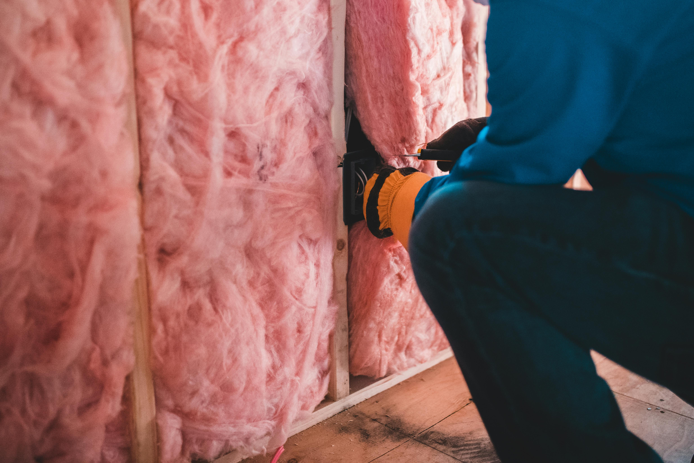

Spray foam removal
Assessment-led removal for survey, sale, mortgage or general property concerns.
Read about spray foam removalInsulation removal and replacement support
Insofix provides free initial photo review, professional on-site removal assessment where required, careful removal and clear completion records across England.

Spray foam and insulation concerns can affect sales, purchases, remortgages and surveys. Outcomes vary by property, documentation and the requirements of surveyors, valuers and lenders.
Assessment-led removal for survey, sale, mortgage or general property concerns.
Read about spray foam removal
Removal planning where access, contamination, moisture concerns or replacement works require it.
Explore loft removal
Property-specific review of extraction suitability, access and limitations.
View cavity wall serviceDoes spray foam always need removal? No. Requirements are case-specific.
Can Insofix guarantee mortgage approval? No. Lenders, valuers and surveyors make their own decisions.
No information is transmitted by the development form until a secure backend is connected.
Start an enquiry